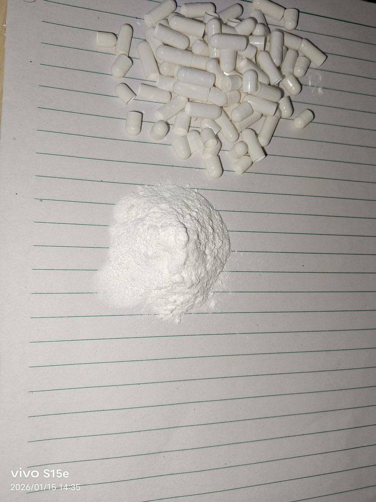

🍀🍥竹蜻蜓🍥🍀
@zqtlovekris99
@CleverFf050755 我以为肌注盐酸盐已经是很大胆的尝试了居然有人敢静注胶囊，这还他妈不是纯普瑞巴林，真是无知者无畏啊，你不会还是拿纯净水做的溶剂吧

Texas#缄默
@CleverFf050755
闲着蛋疼给自己静脉注射普瑞巴林结果针头被pr80里面不知道什么玩意儿堵住了，最后还是直接喝了 https://t.co/IXoHzDfRS6